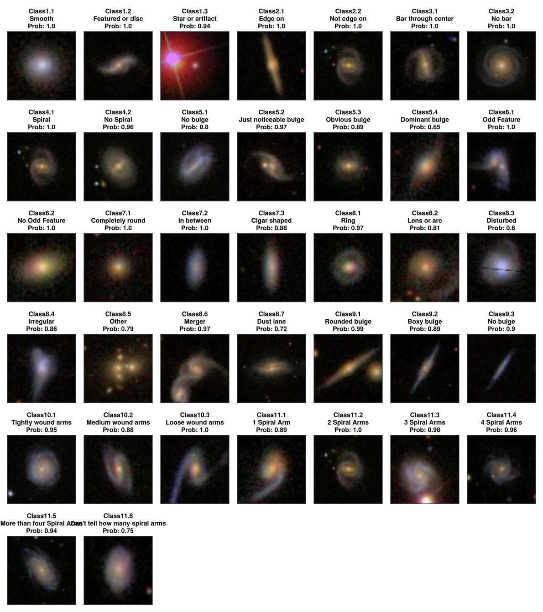
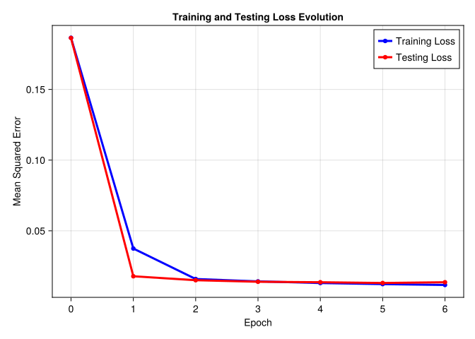
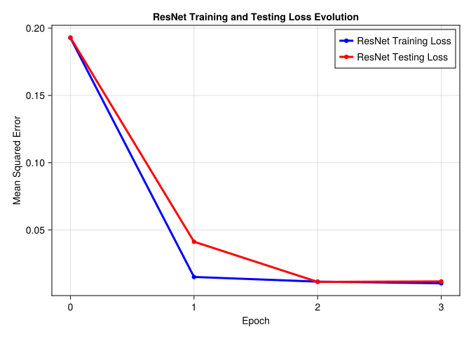

Code
dir = "docs/courses/epss298_DataAnalysis/projects/proj2"
if isdir(dir)
cd(dir)
Pkg.activate(".")
Pkg.resolve()
Pkg.instantiate()
endArtificial Neural Networks and Deep Learning
Images of galaxies obtained by the Sloan Digital Sky Survey (SDSS) have been classified by different people through a participatory science process (see this article: https://arxiv.org/abs/1308.3496). There are tens of thousands of classified examples. However, there are even more images, and classifying them all by humans would take an enormous amount of time.
Our goal is therefore to develop a method to classify these images efficiently. We will use a convolutional neural network.
There are 37 non-exclusive categories (a galaxy can belong to more than one group). Since classification is sometimes ambiguous, participants did not always get the same answers. For each galaxy, the classification result is therefore a probability of belonging to one of the categories. To train the network, we will therefore use the mean squared error (MSE) to compare the probabilities given by the network.
\[ MSE = \frac{1}{N} \sum_{n} (x_n - y_n)^2 \]
For our final criterion (i.e., the one we will give as the answer at the very end), we will use the root of the MSE (RMSE): \(RMSE = \sqrt{MSE}\). This is therefore a regression problem (37 output values y that we are trying to predict with the model), although the ultimate goal is to classify galaxies.
The images are in a folder called images_training_rev1. The probabilities for each class are in the file training_solutions_rev1.csv. GalaxyID gives the identifier and each file in the folder corresponds to a GalaxyID (with a .jpg extension). To familiarize yourself with the data:
(Optional, not to be displayed in the submission) Import the CSV file and display the first few rows
Display the galaxy with the highest probability for each class (a .jpg or .png image). The format is: (dim1, dim2, C) where C=3 in our case. (Please include these images in a single figure, displaying the category name above each image).
Display the resulting figure with a brief explanation. Submit the code used to import the CSV and generate the figure.
dir = "docs/courses/epss298_DataAnalysis/projects/proj2"
if isdir(dir)
cd(dir)
Pkg.activate(".")
Pkg.resolve()
Pkg.instantiate()
endusing CSV
using DataFrames
galaxy_data = CSV.read("data/training_solutions_rev1.csv", DataFrame)
transform!(galaxy_data, names(galaxy_data, Float64) .=> x -> Float32.(x); renamecols=false)
class_columns = names(galaxy_data)[2:end]
DESCRIPTIONS = [
"Smooth", "Featured or disc", "Star or artifact",
"Edge on", "Not edge on",
"Bar through center", "No bar",
"Spiral", "No Spiral",
"No bulge", "Just noticeable bulge", "Obvious bulge", "Dominant bulge",
"Odd Feature", "No Odd Feature",
"Completely round", "In between", "Cigar shaped",
"Ring", "Lens or arc", "Disturbed", "Irregular", "Other", "Merger", "Dust lane",
"Rounded bulge", "Boxy bulge", "No bulge",
"Tightly wound arms", "Medium wound arms", "Loose wound arms",
"1 Spiral Arm", "2 Spiral Arms", "3 Spiral Arms", "4 Spiral Arms",
"More than four Spiral Arms", "Can't tell how many spiral arms",
]
const CDICT = Dict(class_columns .=> DESCRIPTIONS)Dict{String, String} with 37 entries:
"Class5.1" => "No bulge"
"Class8.5" => "Other"
"Class7.2" => "In between"
"Class11.2" => "2 Spiral Arms"
"Class11.3" => "3 Spiral Arms"
"Class3.1" => "Bar through center"
"Class8.2" => "Lens or arc"
"Class7.1" => "Completely round"
"Class6.2" => "No Odd Feature"
"Class6.1" => "Odd Feature"
"Class2.1" => "Edge on"
"Class1.2" => "Featured or disc"
"Class1.1" => "Smooth"
"Class1.3" => "Star or artifact"
"Class2.2" => "Not edge on"
"Class5.4" => "Dominant bulge"
"Class10.1" => "Tightly wound arms"
"Class4.1" => "Spiral"
"Class8.1" => "Ring"
⋮ => ⋮using FileIO
using Images
load_img(id) = Images.load(File{format"JPEG"}("data/images_training_rev1/$(id).jpg"))
load_processed_img(id) = Images.load(File{format"JPEG"}("data/processed_images/$(id).jpg"))load_processed_img (generic function with 1 method)# Find the galaxy with highest probability for each class
highest_prob_df = DataFrame(
map(class_columns) do Class
max_idx = argmax(galaxy_data[!, Class])
GalaxyID = galaxy_data[max_idx, :GalaxyID]
Probability = galaxy_data[max_idx, Class]
(; Class, GalaxyID, Probability)
end
)| Row | Class | GalaxyID | Probability |
|---|---|---|---|
| String | Int64 | Float32 | |
| 1 | Class1.1 | 105447 | 1.0 |
| 2 | Class1.2 | 100859 | 1.0 |
| 3 | Class1.3 | 356310 | 0.935147 |
| 4 | Class2.1 | 344604 | 1.0 |
| 5 | Class2.2 | 105009 | 1.0 |
| 6 | Class3.1 | 205541 | 1.0 |
| 7 | Class3.2 | 185561 | 1.0 |
| 8 | Class4.1 | 105009 | 1.0 |
| 9 | Class4.2 | 780966 | 0.957937 |
| 10 | Class5.1 | 454627 | 0.803556 |
| 11 | Class5.2 | 706376 | 0.965112 |
| 12 | Class5.3 | 180894 | 0.891034 |
| 13 | Class5.4 | 877297 | 0.650383 |
| ⋮ | ⋮ | ⋮ | ⋮ |
| 26 | Class9.1 | 827293 | 0.985982 |
| 27 | Class9.2 | 162557 | 0.889493 |
| 28 | Class9.3 | 107454 | 0.901991 |
| 29 | Class10.1 | 309198 | 0.949733 |
| 30 | Class10.2 | 121394 | 0.877393 |
| 31 | Class10.3 | 416488 | 0.996952 |
| 32 | Class11.1 | 848818 | 0.886363 |
| 33 | Class11.2 | 105009 | 1.0 |
| 34 | Class11.3 | 121006 | 0.975913 |
| 35 | Class11.4 | 233081 | 0.957 |
| 36 | Class11.5 | 495381 | 0.938881 |
| 37 | Class11.6 | 598442 | 0.753082 |
using CairoMakie
using CairoMakie: Axis
num_classes = nrow(highest_prob_df)
function plot_images(df, load; width=150, height=150)
fig = Figure()
# Calculate grid dimensions - aim for roughly square layout
ncols = ceil(Int, sqrt(num_classes))
nrows = ceil(Int, num_classes / ncols)
# Load and display each image
for (i, row) in enumerate(eachrow(highest_prob_df))
row_idx = div(i - 1, ncols) + 1
col_idx = mod(i - 1, ncols) + 1
title = "$(row.Class)\n$(CDICT[row.Class])\nProb: $(round(row.Probability, digits=2))"
ax = Axis(fig[row_idx, col_idx]; width, height, title,)
hidedecorations!(ax)
image!(ax, load(row.GalaxyID))
end
resize_to_layout!(fig)
return fig
end
plot_images(highest_prob_df, load_img)
The initial format of the images is not optimal. The format is large (424x424) and there is a lot of empty space around the galaxies. Write a code that performs the following tasks:
- Crop the image to reduce the size by half around the center (212x212)
- Reduce the resolution so that the image has 64 pixels on each side
- Save all pre-processed images in a new folder
using ProgressMeter
using DataAugmentation
@views function preprocess_image(img; crop_size=212)
cropped_img = DataAugmentation.apply(
DataAugmentation.CenterCrop((crop_size, crop_size)),
DataAugmentation.Image(img)
) |> DataAugmentation.itemdata
return imresize(cropped_img, (64, 64))
end
function process_and_save_images(galaxy_ids, path)
mkpath(path)
@showprogress "Processing images..." for id in galaxy_ids
img_path = joinpath(path, "$(id).jpg")
!isfile(img_path) && save(img_path, preprocess_image(load_img(id)))
end
end
# Process and save all images
process_and_save_images(galaxy_data.GalaxyID, "data/processed_images")Processing images... 84%|██████████████████████████▏ | ETA: 0:00:00 Processing images... 100%|███████████████████████████████| Time: 0:00:00
Display the same figure as in Step 1, but with the images modified, explaining how the modifications were made. Submit the code used to modify the images and generate the figure.
using MLUtils
@views function get_labels(source, ids)
idx = searchsortedfirst.(Ref(source.GalaxyID), ids)
return source[idx, 2:end]
endget_labels (generic function with 1 method)# 5. Define a Julia Dataset equivalent for training and testing
struct GalaxyDataset{I,L,F}
ids::I
labels::L
load::F
end
transform_img(img) = permutedims(channelview(img), (2, 3, 1))
function Base.getindex(dataset::GalaxyDataset, idx)
ids = dataset.ids[idx]
img_arrays = convert(Array{Float32,4}, stack(transform_img ∘ dataset.load, ids; dims=4))
labels = convert(Matrix{Float32}, stack(get_labels.(Ref(dataset.labels), ids); dims=2))
return img_arrays, labels
end
Base.length(dataset::GalaxyDataset) = length(dataset.ids)
train_ids, test_ids = splitobs(galaxy_data.GalaxyID, at=0.8, shuffle=true)
# Create training and testing datasets
train_dataset = GalaxyDataset(
train_ids,
galaxy_data,
load_processed_img
)
test_dataset = GalaxyDataset(
test_ids,
galaxy_data,
load_processed_img
)GalaxyDataset{SubArray{Int64, 1, SentinelArrays.ChainedVector{Int64, Vector{Int64}}, Tuple{Vector{Int64}}, false}, DataFrame, typeof(load_processed_img)}([665337, 601098, 929447, 168280, 575960, 874079, 447302, 159846, 484149, 576176 … 576620, 625128, 646198, 447787, 751400, 604771, 711171, 624185, 879464, 335462], 61578×38 DataFrame
Row │ GalaxyID Class1.1 Class1.2 Class1.3 Class2.1 Class2.2 Class3.1 ⋯
│ Int64 Float32 Float32 Float32 Float32 Float32 Float32 ⋯
───────┼────────────────────────────────────────────────────────────────────────
1 │ 100008 0.383147 0.616853 0.0 0.0 0.616853 0.038452 ⋯
2 │ 100023 0.327001 0.663777 0.009222 0.0311783 0.632599 0.46737
3 │ 100053 0.765717 0.177352 0.056931 0.0 0.177352 0.0
4 │ 100078 0.693377 0.238564 0.068059 0.0 0.238564 0.109493
5 │ 100090 0.933839 0.0 0.066161 0.0 0.0 0.0 ⋯
6 │ 100122 0.738832 0.238159 0.023009 0.0 0.238159 0.0
7 │ 100123 0.462492 0.456033 0.081475 0.0 0.456033 0.0
8 │ 100128 0.687783 0.288344 0.023873 0.0 0.288344 0.069098
⋮ │ ⋮ ⋮ ⋮ ⋮ ⋮ ⋮ ⋮ ⋱
61572 │ 999900 0.460239 0.511396 0.028365 0.109439 0.401957 0.0 ⋯
61573 │ 999936 0.545443 0.454557 0.0 0.0568196 0.397737 0.126909
61574 │ 999948 0.510379 0.489621 0.0 0.0592069 0.430414 0.0
61575 │ 999950 0.901216 0.098784 0.0 0.0 0.098784 0.0
61576 │ 999958 0.202841 0.777376 0.019783 0.116962 0.660414 0.067245 ⋯
61577 │ 999964 0.091 0.909 0.0 0.04545 0.86355 0.022452
61578 │ 999967 0.767 0.14 0.093 0.0 0.14 0.0
32 columns and 61563 rows omitted, load_processed_img)
train_loader = DataLoader(train_dataset, batchsize=32)
test_loader = DataLoader(test_dataset, batchsize=32)385-element DataLoader(::GalaxyDataset{SubArray{Int64, 1, SentinelArrays.ChainedVector{Int64, Vector{Int64}}, Tuple{Vector{Int64}}, false}, DataFrame, typeof(load_processed_img)}, batchsize=32)
with first element:
(64×64×3×32 Array{Float32, 4}, 37×32 Matrix{Float32},)plot_images(highest_prob_df, load_processed_img)
The data is now ready to be analyzed. Next, we need to define a CNN that will take the 64x64 images with 3 colors as input and give us a probability for the 37 classes as output. To start, define a CNN with the following elements (this is an adaptation of the CNN we used with the FashionMNIST data):
After each convolution layer, use batch normalization, ReLU activation, and pooling with a kernel size of 2. Between the fully connected layers, use a ReLU activation function (except at the output of the final layer). Don’t forget to flatten the images between the last convolution layer and the first fully connected layer.
In the report, explain the general structure and function of the different layers. Submit the code that defines this CNN.
function get_output_width(width, kernel_size; stride=1, padding=0, dilation=1)
floor(Int,
(width + 2 * padding - dilation * (kernel_size - 1) - 1) / stride + 1
)
end
using Chain: @chain
@chain 64 begin
get_output_width(5; padding=3)
get_output_width(2; stride=2)
get_output_width(5; padding=3)
get_output_width(2; stride=2)
end17using Random
using Lux
using Optimisers
using Zygote
rng = Random.default_rng()
Random.seed!(rng, 42)
function build_cnn_model(; num_classes=37, pad=3)
return Chain(
Chain(
Conv((5, 5), 3 => 6; pad),
BatchNorm(6, relu),
MaxPool((2, 2)),
),
Chain(
Conv((5, 5), 6 => 16; pad),
BatchNorm(16, relu),
MaxPool((2, 2)),
),
FlattenLayer(; N=3),
Chain(
Dense(4624 => 120, relu),
Dense(120 => 84, relu),
Dense(84 => num_classes, sigmoid);
name="Fully connected layer"
)
)
end
# Initialize the model
model = build_cnn_model()Chain(
layer_1 = Chain(
layer_1 = Conv((5, 5), 3 => 6, pad=3), # 456 parameters
layer_2 = BatchNorm(6, relu, affine=true, track_stats=true), # 12 parameters, plus 13
layer_3 = MaxPool((2, 2)),
),
layer_2 = Chain(
layer_1 = Conv((5, 5), 6 => 16, pad=3), # 2_416 parameters
layer_2 = BatchNorm(16, relu, affine=true, track_stats=true), # 32 parameters, plus 33
layer_3 = MaxPool((2, 2)),
),
layer_3 = FlattenLayer{Static.StaticInt{3}}(static(3)),
layer_4 = Fully connected layer(
layer_1 = Dense(4624 => 120, relu), # 555_000 parameters
layer_2 = Dense(120 => 84, relu), # 10_164 parameters
layer_3 = Dense(84 => 37, σ), # 3_145 parameters
),
) # Total: 571_225 parameters,
# plus 46 states.
Create dummy input to test the model
ps, st = Lux.setup(rng, model);
x = rand(rng, Float32, 64, 64, 3, 2) # (height, width, channels, batch_size)
model(x, ps, Lux.testmode(st))(Float32[0.5226176 0.5963492; 0.7555507 0.75195336; … ; 0.43180552 0.5062954; 0.64954376 0.6692772], (layer_1 = (layer_1 = NamedTuple(), layer_2 = (running_mean = Float32[0.0, 0.0, 0.0, 0.0, 0.0, 0.0], running_var = Float32[1.0, 1.0, 1.0, 1.0, 1.0, 1.0], training = Val{false}()), layer_3 = NamedTuple()), layer_2 = (layer_1 = NamedTuple(), layer_2 = (running_mean = Float32[0.0, 0.0, 0.0, 0.0, 0.0, 0.0, 0.0, 0.0, 0.0, 0.0, 0.0, 0.0, 0.0, 0.0, 0.0, 0.0], running_var = Float32[1.0, 1.0, 1.0, 1.0, 1.0, 1.0, 1.0, 1.0, 1.0, 1.0, 1.0, 1.0, 1.0, 1.0, 1.0, 1.0], training = Val{false}()), layer_3 = NamedTuple()), layer_3 = NamedTuple(), layer_4 = (layer_1 = NamedTuple(), layer_2 = NamedTuple(), layer_3 = NamedTuple())))Once the network is defined, it must be trained to recognize galaxies. Adapt the training and testing loops we saw in class. Use the following hyperparameters, then train the model.
Record the value of the objective function for each epoch, for the training and test data separately. Once training is complete, display the evolution of the objective function for the training and test data.
In the report, explain the training process and display the evolution of the objective function. Submit the code used to train the network.
using Printf
function evaluate_model(model, ps, st, dataloader, lossfn)
total_loss = 0.0f0
total_batches = 0
st = Lux.testmode(st)
@showprogress "Testing..." for (x, y) in dataloader
# Forward pass
y_pred = first(model(x, ps, st))
# Compute loss
loss = lossfn(y_pred, y)
total_loss += loss
total_batches += 1
end
return total_loss / total_batches
end
function init_evaluate_model(model, ps, st, train_loader, test_loader, lossfn=MSELoss(); verbose=true)
train_loss = evaluate_model(model, ps, st, train_loader, lossfn)
test_loss = evaluate_model(model, ps, st, test_loader, lossfn)
if verbose
@printf "Initial: Train Loss %4.5f, Test Loss %4.5f\n" train_loss test_loss
end
return train_loss, test_loss
endinit_evaluate_model (generic function with 2 methods)using JLD2
function train_model!(model, ps, st, train_loader, test_loader; op=Adam(0.003f0), epochs=6)
train_state = Training.TrainState(model, ps, st, op)
ad = AutoZygote()
lossfn = MSELoss()
# Initialize arrays to store losses
train_losses = Float32[]
test_losses = Float32[]
for epoch in 1:epochs
# Training phase
total_loss = 0.0f0
total_batches = 0
@showprogress "Training..." for data in train_loader
_, loss, _, train_state = Training.single_train_step!(
ad, lossfn,
data, train_state
)
total_loss += loss
total_batches += 1
end
# Calculate average training loss for this epoch
train_loss = total_loss / total_batches
push!(train_losses, train_loss)
test_loss = evaluate_model(model, train_state.parameters, train_state.states, test_loader, lossfn)
push!(test_losses, test_loss)
@printf "Epoch [%3d]: Train Loss %4.5f, Test Loss %4.5f\n" epoch train_loss test_loss
end
return train_state, train_losses, test_losses
end
# load file if it exists
epochs = 6
if isfile("trained_model.jld2")
@load "trained_model.jld2" ps_trained st_trained train_losses test_losses
else
# Evaluate initial losses before training
initial_train_loss, initial_test_loss = init_evaluate_model(model, ps, st, train_loader, test_loader; verbose=true)
# Train the model and record both training and testing losses
train_state, train_losses, test_losses = train_model!(model, ps, st, train_loader, test_loader; epochs)
# Append training losses to the initial losses
prepend!(train_losses, initial_train_loss)
prepend!(test_losses, initial_test_loss)
ps_trained, st_trained = train_state.parameters, train_state.states
@save "trained_model.jld2" ps_trained st_trained train_losses test_losses
end4-element Vector{Symbol}:
:ps_trained
:st_trained
:train_losses
:test_losses# Visualize the evolution of the training and testing loss
fig = Figure()
ax = Axis(fig[1, 1],
xlabel="Epoch",
ylabel="Mean Squared Error",
title="Training and Testing Loss Evolution",
)
scatterlines!(0:epochs, train_losses, linewidth=3, color=:blue, label="Training Loss")
scatterlines!(0:epochs, test_losses, linewidth=3, color=:red, label="Testing Loss")
axislegend(ax, position=:rt)
fig
With the trained model, what is the RMSE value for the test data? For reference, a simple solution that uses the average color of the 100 central pixels (10x10) gives an RMSE of 0.16194. How does your neural network compare to this method? The dataset we are studying was used in a Kaggle competition several years ago: https://www.kaggle.com/c/galaxy-zoo-the-galaxy-challenge. Several people have attempted to find a solution that gives the smallest possible RMSE. The solutions are ranked in the Leaderboard tab. How does the solution obtained in Step 4 rank? In the report, report the RMSE and discuss the comparison with a simplistic method (central pixels). Submit the code used to calculate the RMSE.
cnn_rmse = sqrt(test_losses[end])
simple_rmse_ref = 0.16194
improvement = round(((simple_rmse_ref - cnn_rmse) / simple_rmse_ref * 100), digits=2)
@info "CNN RMSE on train data: " sqrt(train_losses[end])
@info "CNN RMSE on test data: " sqrt(test_losses[end])
@info "Improvement: $(improvement) %"
if cnn_rmse < simple_rmse_ref
println("\nOur CNN model outperforms the simple central pixels method!")
println("This demonstrates that the CNN can learn complex patterns across the entire image rather than just using the central region.")
else
println("\nOur CNN model doesn't outperform the simple method yet.")
println("This could be due to several factors:")
println("1. Limited training epochs")
println("2. Model architecture might need optimization")
println("3. Learning rate or other hyperparameters might need tuning")
end┌ Info: CNN RMSE on train data: └ sqrt(train_losses[end]) = 0.108268715f0 ┌ Info: CNN RMSE on test data: └ sqrt(test_losses[end]) = 0.11684338f0 [ Info: Improvement: 27.85 % Our CNN model outperforms the simple central pixels method! This demonstrates that the CNN can learn complex patterns across the entire image rather than just using the central region.
In class, we saw different ways to improve model performance (regularization, dropout, data augmentation, adding layers, changing the model configuration or training process). Modify the model and evaluate the effect of the changes on training. You can also completely redefine the model, either using a known architecture (e.g., ResNet) or an original architecture. How does the performance compare to that of Steps 3-4-5? Can you explain why the changes had this effect?
Grading scale:
using Boltz, Metalhead, Lux
# Function to create a modified ResNet for our galaxy classification task
function build_resnet_model(; num_classes=37)
# Get the base ResNet-18 model
resnet = Vision.ResNet(18)
# Extract all layers except the final classification layer
base_layers = resnet.layer.layer_1
# Create a new final layer for our 37-class multi-label classification
final_layer = Chain(
AdaptiveMeanPool((1, 1)),
FlattenLayer(; N=3),
Dense(512 => num_classes, sigmoid)
)
# Combine the base layers with our new classification head
return Chain(base_layers, final_layer)
end
# Initialize the ResNet model
resnet_model = build_resnet_model()
resnet_ps, resnet_st = Lux.setup(rng, resnet_model)
# Show model structure
resnet_modelChain(
layer_1 = Chain(
layer_1 = Chain(
layer_1 = Conv((7, 7), 3 => 64, pad=3, stride=2, use_bias=false), # 9_408 parameters
layer_2 = BatchNorm(64, relu, affine=true, track_stats=true), # 128 parameters, plus 129
layer_3 = MaxPool((3, 3), pad=1, stride=2),
),
layer_2 = Chain(
layer_1 = Parallel(
connection = addact(NNlib.relu, ...),
layer_1 = NoOpLayer(),
layer_2 = Chain(
layer_1 = Conv((3, 3), 64 => 64, pad=1, use_bias=false), # 36_864 parameters
layer_2 = BatchNorm(64, affine=true, track_stats=true), # 128 parameters, plus 129
layer_3 = WrappedFunction(relu),
layer_4 = Conv((3, 3), 64 => 64, pad=1, use_bias=false), # 36_864 parameters
layer_5 = BatchNorm(64, affine=true, track_stats=true), # 128 parameters, plus 129
),
),
layer_2 = Parallel(
connection = addact(NNlib.relu, ...),
layer_1 = NoOpLayer(),
layer_2 = Chain(
layer_1 = Conv((3, 3), 64 => 64, pad=1, use_bias=false), # 36_864 parameters
layer_2 = BatchNorm(64, affine=true, track_stats=true), # 128 parameters, plus 129
layer_3 = WrappedFunction(relu),
layer_4 = Conv((3, 3), 64 => 64, pad=1, use_bias=false), # 36_864 parameters
layer_5 = BatchNorm(64, affine=true, track_stats=true), # 128 parameters, plus 129
),
),
),
layer_3 = Chain(
layer_1 = Parallel(
connection = addact(NNlib.relu, ...),
layer_1 = Chain(
layer_1 = Conv((1, 1), 64 => 128, stride=2, use_bias=false), # 8_192 parameters
layer_2 = BatchNorm(128, affine=true, track_stats=true), # 256 parameters, plus 257
),
layer_2 = Chain(
layer_1 = Conv((3, 3), 64 => 128, pad=1, stride=2, use_bias=false), # 73_728 parameters
layer_2 = BatchNorm(128, affine=true, track_stats=true), # 256 parameters, plus 257
layer_3 = WrappedFunction(relu),
layer_4 = Conv((3, 3), 128 => 128, pad=1, use_bias=false), # 147_456 parameters
layer_5 = BatchNorm(128, affine=true, track_stats=true), # 256 parameters, plus 257
),
),
layer_2 = Parallel(
connection = addact(NNlib.relu, ...),
layer_1 = NoOpLayer(),
layer_2 = Chain(
layer_1 = Conv((3, 3), 128 => 128, pad=1, use_bias=false), # 147_456 parameters
layer_2 = BatchNorm(128, affine=true, track_stats=true), # 256 parameters, plus 257
layer_3 = WrappedFunction(relu),
layer_4 = Conv((3, 3), 128 => 128, pad=1, use_bias=false), # 147_456 parameters
layer_5 = BatchNorm(128, affine=true, track_stats=true), # 256 parameters, plus 257
),
),
),
layer_4 = Chain(
layer_1 = Parallel(
connection = addact(NNlib.relu, ...),
layer_1 = Chain(
layer_1 = Conv((1, 1), 128 => 256, stride=2, use_bias=false), # 32_768 parameters
layer_2 = BatchNorm(256, affine=true, track_stats=true), # 512 parameters, plus 513
),
layer_2 = Chain(
layer_1 = Conv((3, 3), 128 => 256, pad=1, stride=2, use_bias=false), # 294_912 parameters
layer_2 = BatchNorm(256, affine=true, track_stats=true), # 512 parameters, plus 513
layer_3 = WrappedFunction(relu),
layer_4 = Conv((3, 3), 256 => 256, pad=1, use_bias=false), # 589_824 parameters
layer_5 = BatchNorm(256, affine=true, track_stats=true), # 512 parameters, plus 513
),
),
layer_2 = Parallel(
connection = addact(NNlib.relu, ...),
layer_1 = NoOpLayer(),
layer_2 = Chain(
layer_1 = Conv((3, 3), 256 => 256, pad=1, use_bias=false), # 589_824 parameters
layer_2 = BatchNorm(256, affine=true, track_stats=true), # 512 parameters, plus 513
layer_3 = WrappedFunction(relu),
layer_4 = Conv((3, 3), 256 => 256, pad=1, use_bias=false), # 589_824 parameters
layer_5 = BatchNorm(256, affine=true, track_stats=true), # 512 parameters, plus 513
),
),
),
layer_5 = Chain(
layer_1 = Parallel(
connection = addact(NNlib.relu, ...),
layer_1 = Chain(
layer_1 = Conv((1, 1), 256 => 512, stride=2, use_bias=false), # 131_072 parameters
layer_2 = BatchNorm(512, affine=true, track_stats=true), # 1_024 parameters, plus 1_025
),
layer_2 = Chain(
layer_1 = Conv((3, 3), 256 => 512, pad=1, stride=2, use_bias=false), # 1_179_648 parameters
layer_2 = BatchNorm(512, affine=true, track_stats=true), # 1_024 parameters, plus 1_025
layer_3 = WrappedFunction(relu),
layer_4 = Conv((3, 3), 512 => 512, pad=1, use_bias=false), # 2_359_296 parameters
layer_5 = BatchNorm(512, affine=true, track_stats=true), # 1_024 parameters, plus 1_025
),
),
layer_2 = Parallel(
connection = addact(NNlib.relu, ...),
layer_1 = NoOpLayer(),
layer_2 = Chain(
layer_1 = Conv((3, 3), 512 => 512, pad=1, use_bias=false), # 2_359_296 parameters
layer_2 = BatchNorm(512, affine=true, track_stats=true), # 1_024 parameters, plus 1_025
layer_3 = WrappedFunction(relu),
layer_4 = Conv((3, 3), 512 => 512, pad=1, use_bias=false), # 2_359_296 parameters
layer_5 = BatchNorm(512, affine=true, track_stats=true), # 1_024 parameters, plus 1_025
),
),
),
),
layer_2 = Chain(
layer_1 = AdaptiveMeanPool((1, 1)),
layer_2 = FlattenLayer{Static.StaticInt{3}}(static(3)),
layer_3 = Dense(512 => 37, σ), # 18_981 parameters
),
) # Total: 11_195_493 parameters,
# plus 9_620 states.
# Create dummy input to test the model
x_test = rand(rng, Float32, 64, 64, 3, 2) # (height, width, channels, batch_size)
resnet_model(x_test, resnet_ps, Lux.testmode(resnet_st))(Float32[0.30450302 0.30915502; 0.37083414 0.3660484; … ; 0.6346178 0.65124583; 0.30676535 0.30921096], (layer_1 = (layer_1 = (layer_1 = NamedTuple(), layer_2 = (running_mean = Float32[0.0, 0.0, 0.0, 0.0, 0.0, 0.0, 0.0, 0.0, 0.0, 0.0 … 0.0, 0.0, 0.0, 0.0, 0.0, 0.0, 0.0, 0.0, 0.0, 0.0], running_var = Float32[1.0, 1.0, 1.0, 1.0, 1.0, 1.0, 1.0, 1.0, 1.0, 1.0 … 1.0, 1.0, 1.0, 1.0, 1.0, 1.0, 1.0, 1.0, 1.0, 1.0], training = Val{false}()), layer_3 = NamedTuple()), layer_2 = (layer_1 = (layer_1 = NamedTuple(), layer_2 = (layer_1 = NamedTuple(), layer_2 = (running_mean = Float32[0.0, 0.0, 0.0, 0.0, 0.0, 0.0, 0.0, 0.0, 0.0, 0.0 … 0.0, 0.0, 0.0, 0.0, 0.0, 0.0, 0.0, 0.0, 0.0, 0.0], running_var = Float32[1.0, 1.0, 1.0, 1.0, 1.0, 1.0, 1.0, 1.0, 1.0, 1.0 … 1.0, 1.0, 1.0, 1.0, 1.0, 1.0, 1.0, 1.0, 1.0, 1.0], training = Val{false}()), layer_3 = NamedTuple(), layer_4 = NamedTuple(), layer_5 = (running_mean = Float32[0.0, 0.0, 0.0, 0.0, 0.0, 0.0, 0.0, 0.0, 0.0, 0.0 … 0.0, 0.0, 0.0, 0.0, 0.0, 0.0, 0.0, 0.0, 0.0, 0.0], running_var = Float32[1.0, 1.0, 1.0, 1.0, 1.0, 1.0, 1.0, 1.0, 1.0, 1.0 … 1.0, 1.0, 1.0, 1.0, 1.0, 1.0, 1.0, 1.0, 1.0, 1.0], training = Val{false}()))), layer_2 = (layer_1 = NamedTuple(), layer_2 = (layer_1 = NamedTuple(), layer_2 = (running_mean = Float32[0.0, 0.0, 0.0, 0.0, 0.0, 0.0, 0.0, 0.0, 0.0, 0.0 … 0.0, 0.0, 0.0, 0.0, 0.0, 0.0, 0.0, 0.0, 0.0, 0.0], running_var = Float32[1.0, 1.0, 1.0, 1.0, 1.0, 1.0, 1.0, 1.0, 1.0, 1.0 … 1.0, 1.0, 1.0, 1.0, 1.0, 1.0, 1.0, 1.0, 1.0, 1.0], training = Val{false}()), layer_3 = NamedTuple(), layer_4 = NamedTuple(), layer_5 = (running_mean = Float32[0.0, 0.0, 0.0, 0.0, 0.0, 0.0, 0.0, 0.0, 0.0, 0.0 … 0.0, 0.0, 0.0, 0.0, 0.0, 0.0, 0.0, 0.0, 0.0, 0.0], running_var = Float32[1.0, 1.0, 1.0, 1.0, 1.0, 1.0, 1.0, 1.0, 1.0, 1.0 … 1.0, 1.0, 1.0, 1.0, 1.0, 1.0, 1.0, 1.0, 1.0, 1.0], training = Val{false}())))), layer_3 = (layer_1 = (layer_1 = (layer_1 = NamedTuple(), layer_2 = (running_mean = Float32[0.0, 0.0, 0.0, 0.0, 0.0, 0.0, 0.0, 0.0, 0.0, 0.0 … 0.0, 0.0, 0.0, 0.0, 0.0, 0.0, 0.0, 0.0, 0.0, 0.0], running_var = Float32[1.0, 1.0, 1.0, 1.0, 1.0, 1.0, 1.0, 1.0, 1.0, 1.0 … 1.0, 1.0, 1.0, 1.0, 1.0, 1.0, 1.0, 1.0, 1.0, 1.0], training = Val{false}())), layer_2 = (layer_1 = NamedTuple(), layer_2 = (running_mean = Float32[0.0, 0.0, 0.0, 0.0, 0.0, 0.0, 0.0, 0.0, 0.0, 0.0 … 0.0, 0.0, 0.0, 0.0, 0.0, 0.0, 0.0, 0.0, 0.0, 0.0], running_var = Float32[1.0, 1.0, 1.0, 1.0, 1.0, 1.0, 1.0, 1.0, 1.0, 1.0 … 1.0, 1.0, 1.0, 1.0, 1.0, 1.0, 1.0, 1.0, 1.0, 1.0], training = Val{false}()), layer_3 = NamedTuple(), layer_4 = NamedTuple(), layer_5 = (running_mean = Float32[0.0, 0.0, 0.0, 0.0, 0.0, 0.0, 0.0, 0.0, 0.0, 0.0 … 0.0, 0.0, 0.0, 0.0, 0.0, 0.0, 0.0, 0.0, 0.0, 0.0], running_var = Float32[1.0, 1.0, 1.0, 1.0, 1.0, 1.0, 1.0, 1.0, 1.0, 1.0 … 1.0, 1.0, 1.0, 1.0, 1.0, 1.0, 1.0, 1.0, 1.0, 1.0], training = Val{false}()))), layer_2 = (layer_1 = NamedTuple(), layer_2 = (layer_1 = NamedTuple(), layer_2 = (running_mean = Float32[0.0, 0.0, 0.0, 0.0, 0.0, 0.0, 0.0, 0.0, 0.0, 0.0 … 0.0, 0.0, 0.0, 0.0, 0.0, 0.0, 0.0, 0.0, 0.0, 0.0], running_var = Float32[1.0, 1.0, 1.0, 1.0, 1.0, 1.0, 1.0, 1.0, 1.0, 1.0 … 1.0, 1.0, 1.0, 1.0, 1.0, 1.0, 1.0, 1.0, 1.0, 1.0], training = Val{false}()), layer_3 = NamedTuple(), layer_4 = NamedTuple(), layer_5 = (running_mean = Float32[0.0, 0.0, 0.0, 0.0, 0.0, 0.0, 0.0, 0.0, 0.0, 0.0 … 0.0, 0.0, 0.0, 0.0, 0.0, 0.0, 0.0, 0.0, 0.0, 0.0], running_var = Float32[1.0, 1.0, 1.0, 1.0, 1.0, 1.0, 1.0, 1.0, 1.0, 1.0 … 1.0, 1.0, 1.0, 1.0, 1.0, 1.0, 1.0, 1.0, 1.0, 1.0], training = Val{false}())))), layer_4 = (layer_1 = (layer_1 = (layer_1 = NamedTuple(), layer_2 = (running_mean = Float32[0.0, 0.0, 0.0, 0.0, 0.0, 0.0, 0.0, 0.0, 0.0, 0.0 … 0.0, 0.0, 0.0, 0.0, 0.0, 0.0, 0.0, 0.0, 0.0, 0.0], running_var = Float32[1.0, 1.0, 1.0, 1.0, 1.0, 1.0, 1.0, 1.0, 1.0, 1.0 … 1.0, 1.0, 1.0, 1.0, 1.0, 1.0, 1.0, 1.0, 1.0, 1.0], training = Val{false}())), layer_2 = (layer_1 = NamedTuple(), layer_2 = (running_mean = Float32[0.0, 0.0, 0.0, 0.0, 0.0, 0.0, 0.0, 0.0, 0.0, 0.0 … 0.0, 0.0, 0.0, 0.0, 0.0, 0.0, 0.0, 0.0, 0.0, 0.0], running_var = Float32[1.0, 1.0, 1.0, 1.0, 1.0, 1.0, 1.0, 1.0, 1.0, 1.0 … 1.0, 1.0, 1.0, 1.0, 1.0, 1.0, 1.0, 1.0, 1.0, 1.0], training = Val{false}()), layer_3 = NamedTuple(), layer_4 = NamedTuple(), layer_5 = (running_mean = Float32[0.0, 0.0, 0.0, 0.0, 0.0, 0.0, 0.0, 0.0, 0.0, 0.0 … 0.0, 0.0, 0.0, 0.0, 0.0, 0.0, 0.0, 0.0, 0.0, 0.0], running_var = Float32[1.0, 1.0, 1.0, 1.0, 1.0, 1.0, 1.0, 1.0, 1.0, 1.0 … 1.0, 1.0, 1.0, 1.0, 1.0, 1.0, 1.0, 1.0, 1.0, 1.0], training = Val{false}()))), layer_2 = (layer_1 = NamedTuple(), layer_2 = (layer_1 = NamedTuple(), layer_2 = (running_mean = Float32[0.0, 0.0, 0.0, 0.0, 0.0, 0.0, 0.0, 0.0, 0.0, 0.0 … 0.0, 0.0, 0.0, 0.0, 0.0, 0.0, 0.0, 0.0, 0.0, 0.0], running_var = Float32[1.0, 1.0, 1.0, 1.0, 1.0, 1.0, 1.0, 1.0, 1.0, 1.0 … 1.0, 1.0, 1.0, 1.0, 1.0, 1.0, 1.0, 1.0, 1.0, 1.0], training = Val{false}()), layer_3 = NamedTuple(), layer_4 = NamedTuple(), layer_5 = (running_mean = Float32[0.0, 0.0, 0.0, 0.0, 0.0, 0.0, 0.0, 0.0, 0.0, 0.0 … 0.0, 0.0, 0.0, 0.0, 0.0, 0.0, 0.0, 0.0, 0.0, 0.0], running_var = Float32[1.0, 1.0, 1.0, 1.0, 1.0, 1.0, 1.0, 1.0, 1.0, 1.0 … 1.0, 1.0, 1.0, 1.0, 1.0, 1.0, 1.0, 1.0, 1.0, 1.0], training = Val{false}())))), layer_5 = (layer_1 = (layer_1 = (layer_1 = NamedTuple(), layer_2 = (running_mean = Float32[0.0, 0.0, 0.0, 0.0, 0.0, 0.0, 0.0, 0.0, 0.0, 0.0 … 0.0, 0.0, 0.0, 0.0, 0.0, 0.0, 0.0, 0.0, 0.0, 0.0], running_var = Float32[1.0, 1.0, 1.0, 1.0, 1.0, 1.0, 1.0, 1.0, 1.0, 1.0 … 1.0, 1.0, 1.0, 1.0, 1.0, 1.0, 1.0, 1.0, 1.0, 1.0], training = Val{false}())), layer_2 = (layer_1 = NamedTuple(), layer_2 = (running_mean = Float32[0.0, 0.0, 0.0, 0.0, 0.0, 0.0, 0.0, 0.0, 0.0, 0.0 … 0.0, 0.0, 0.0, 0.0, 0.0, 0.0, 0.0, 0.0, 0.0, 0.0], running_var = Float32[1.0, 1.0, 1.0, 1.0, 1.0, 1.0, 1.0, 1.0, 1.0, 1.0 … 1.0, 1.0, 1.0, 1.0, 1.0, 1.0, 1.0, 1.0, 1.0, 1.0], training = Val{false}()), layer_3 = NamedTuple(), layer_4 = NamedTuple(), layer_5 = (running_mean = Float32[0.0, 0.0, 0.0, 0.0, 0.0, 0.0, 0.0, 0.0, 0.0, 0.0 … 0.0, 0.0, 0.0, 0.0, 0.0, 0.0, 0.0, 0.0, 0.0, 0.0], running_var = Float32[1.0, 1.0, 1.0, 1.0, 1.0, 1.0, 1.0, 1.0, 1.0, 1.0 … 1.0, 1.0, 1.0, 1.0, 1.0, 1.0, 1.0, 1.0, 1.0, 1.0], training = Val{false}()))), layer_2 = (layer_1 = NamedTuple(), layer_2 = (layer_1 = NamedTuple(), layer_2 = (running_mean = Float32[0.0, 0.0, 0.0, 0.0, 0.0, 0.0, 0.0, 0.0, 0.0, 0.0 … 0.0, 0.0, 0.0, 0.0, 0.0, 0.0, 0.0, 0.0, 0.0, 0.0], running_var = Float32[1.0, 1.0, 1.0, 1.0, 1.0, 1.0, 1.0, 1.0, 1.0, 1.0 … 1.0, 1.0, 1.0, 1.0, 1.0, 1.0, 1.0, 1.0, 1.0, 1.0], training = Val{false}()), layer_3 = NamedTuple(), layer_4 = NamedTuple(), layer_5 = (running_mean = Float32[0.0, 0.0, 0.0, 0.0, 0.0, 0.0, 0.0, 0.0, 0.0, 0.0 … 0.0, 0.0, 0.0, 0.0, 0.0, 0.0, 0.0, 0.0, 0.0, 0.0], running_var = Float32[1.0, 1.0, 1.0, 1.0, 1.0, 1.0, 1.0, 1.0, 1.0, 1.0 … 1.0, 1.0, 1.0, 1.0, 1.0, 1.0, 1.0, 1.0, 1.0, 1.0], training = Val{false}()))))), layer_2 = (layer_1 = NamedTuple(), layer_2 = NamedTuple(), layer_3 = NamedTuple())))resnet_epochs = 3
# Evaluate initial performance
if isfile("resnet_trained_model.jld2")
@load "resnet_trained_model.jld2" resnet_ps_trained resnet_st_trained resnet_train_losses resnet_test_losses
else
initial_train_loss, initial_test_loss = init_evaluate_model(resnet_model, resnet_ps, resnet_st, train_loader, test_loader)
@printf "Initial ResNet: Train Loss %4.5f, Test Loss %4.5f\n" initial_train_loss initial_test_loss
# Train the ResNet model
resnet_train_state, resnet_train_losses, resnet_test_losses = train_model!(resnet_model, resnet_ps, resnet_st, train_loader, test_loader; op=Adam(0.0005f0), epochs=resnet_epochs)
# Prepend initial losses
prepend!(resnet_train_losses, initial_train_loss)
prepend!(resnet_test_losses, initial_test_loss)
# Save the trained model
resnet_ps_trained, resnet_st_trained = resnet_train_state.parameters, resnet_train_state.states
@save "resnet_trained_model.jld2" resnet_ps_trained resnet_st_trained resnet_train_losses resnet_test_losses
end4-element Vector{Symbol}:
:resnet_ps_trained
:resnet_st_trained
:resnet_train_losses
:resnet_test_losses# Visualize the evolution of the training and testing loss for ResNet
fig = Figure()
ax = Axis(fig[1, 1],
xlabel="Epoch",
ylabel="Mean Squared Error",
title="ResNet Training and Testing Loss Evolution",
)
scatterlines!(0:resnet_epochs, resnet_train_losses, linewidth=3, color=:blue, label="ResNet Training Loss")
scatterlines!(0:resnet_epochs, resnet_test_losses, linewidth=3, color=:red, label="ResNet Testing Loss")
axislegend(ax, position=:rt)
fig
# Compare RMSE of ResNet with the original CNN
resnet_rmse = sqrt(resnet_test_losses[end])
cnn_rmse = sqrt(test_losses[end])
simple_rmse_ref = 0.16194
@info "Original CNN RMSE: " cnn_rmse
@info "ResNet RMSE: " resnet_rmse
@info "Reference simple method RMSE: " simple_rmse_ref
resnet_improvement = round(((cnn_rmse - resnet_rmse) / cnn_rmse * 100), digits=2)
if resnet_rmse < cnn_rmse
println("\nResNet outperforms our original CNN by $(resnet_improvement)%!")
println("The skip connections in ResNet help with gradient flow during training,
allowing the network to learn more complex features."
)
else
println("\nResNet doesn't outperform our original CNN.")
println("This could be due to:")
println("1. Limited training time (ResNet is much larger and needs more epochs)")
println("2. Potential overfitting due to the larger model size")
println("3. The original CNN might be better suited for this specific dataset size")
end┌ Info: Original CNN RMSE: └ cnn_rmse = 0.11684338f0 ┌ Info: ResNet RMSE: └ resnet_rmse = 0.1086326f0 ┌ Info: Reference simple method RMSE: └ simple_rmse_ref = 0.16194 ResNet outperforms our original CNN by 7.03%! The skip connections in ResNet help with gradient flow during training, allowing the network to learn more complex features.